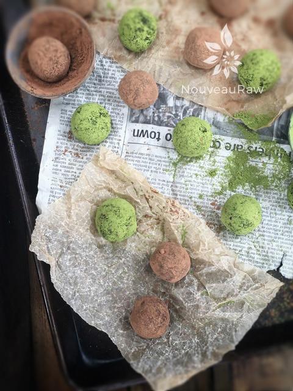

Chocolate Matcha Espresso Truffles
~ raw, vegan, gluten-free, nut-free ~
So little time, so many Chocolate Matcha Espresso Truffles. I would love to say that when the holiday season rolls around, I am more inspired to be in the kitchen making delicious desserts, but to be honest, it is almost a daily ritual for me.
There is something very therapeutic about my busy little hands creating something. With that being said, making and sharing food around the holidays does bring me great pleasure.
These little bundles of joy are perfect to have on hand for those spontaneous gatherings. They keep beautifully in the freezer so you can make these well in advance.
The Power of Matcha
I don’t know about you, but I could use a little boost when the holidays roll around, ah heck, let’s be honest here… I could use a little boost every day! The health benefits of matcha tea include improved mental alertness and clarity, stronger immune defense, and detoxification. It sounds like the perfect power ball to me.
Caffeine Avoiders Beware
This recipe has caffeine in it. The espresso shot, the cacao powder, and matcha, which may trigger allergic reactions in some susceptible individuals. If that is you, we can remedy that right here and now. First of all, skip the espresso shot. Instead, try adding other flavorful extracts such as almond or hazelnut. To further cut down the caffeine, exchange the cacao for carob. And if you must avoid all caffeine… skip the matcha.
Makes around 28
- 2 cups packed, Medjool dates, pitted & rehydrated
- 1/2 cup dried, shredded coconut
- 1/2 cup gluten-free, rolled oats, soaked & dehydrated
- 1/4 cup raw cacao powder
- 1 tsp cardamom powder
- 1/4 tsp Himalayan pink salt
- 1 tsp vanilla extract
- 2 shots espresso
Preparation:
- Start by rehydrating the dates. Place them in a bowl with enough warm water to cover them.
- Let them soften while you pull the remaining ingredients together.
- Once ready for the dates, drain the soak water and hand-squeeze the excess water from them.
- In a food processor, fitted with the “S” blade, combine the coconut, oats, cacao powder, cardamom, and salt. Process until the oats and coconut break down to a powder.
- Adding all the dry spices at this time will help make sure they get well distributed in the batter.
- Add the dates, espresso, and vanilla — process to a paste.
- Alternative option – if you don’t like the idea of using espresso/coffee in your diet, you can omit this and substitute a different flavor. You could try almond, hazelnut, or any other extract in its place. If you do, I would start with 1/2 tsp first and see if you need to add more.
- Transfer the batter into a bowl and place it in the freezer for 30+ minutes to firm up.
- Using the 1 Tbsp sized cookie scoop, level off each scoop and place the dough the palm of your hand and roll into a ball.
- I found it easier to roll all the balls first, then roll each one in the cacao or matcha powder. Otherwise, my palms built up with sticky truffle batter, and as I tried to roll the ball in the powder, half it stuck to my palms rather than the ball.
- Roll each truffle in cacao powder or matcha powder, place on a tray, and slide back into the freezer to set.
- Store in an air-tight container in the fridge or freezer for 2-4 weeks.

© AmieSue.com